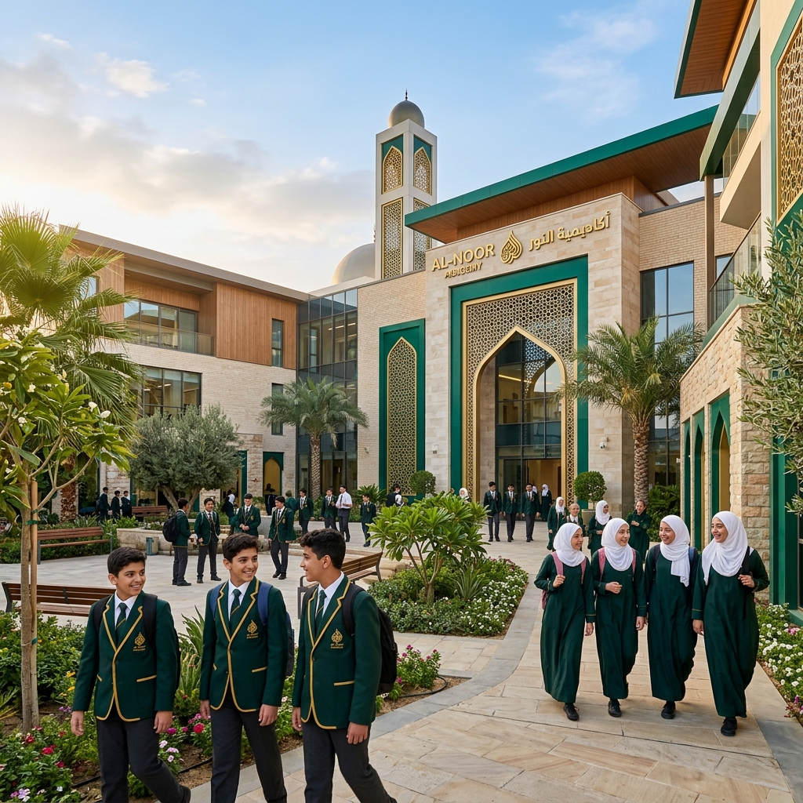

The world's most advanced AI-powered expert system for Quranic memorization. Designed for students, trusted by teachers.
TasmiqAI bridges the gap between traditional Tahfiz education and modern technology. Our platform provides real-time feedback on Tajwid, Makhraj, and fluency, allowing students to refine their recitation independently before presenting it to their teachers.
We believe that technology should empower the teacher-student relationship, not replace it. Our tools are designed to streamline progress tracking and enhance the learning experience.
Discover Our MissionInstant, high-fidelity feedback on your Tajwid and Makhraj using state-of-the-art speech recognition technology.
Dynamic dashboards that visualize your memorization journey, highlighting strengths and areas for improvement.
Seamlessly submit recitations to your Ustadh for professional review, bridging the gap between sessions.
Smart revision cycles based on the Spaced Repetition method to ensure long-term retention of your Hifz.
Gamified milestones that celebrate every Juz completed and every goal achieved, keeping you inspired.
Practice anywhere with our mobile app and track detailed metrics on the web portal.
"The best among you are those who learn the Quran and teach it."
Accelerated memorization program for dedicated students aiming for 30 Juz completion with AI guidance.
Learn MoreFocused modules on phonetic precision and the rules of recitation using real-time frequency analysis.
Learn MoreCertification-grade review services for advanced students, Imams, and aspiring Quran teachers.
Learn More